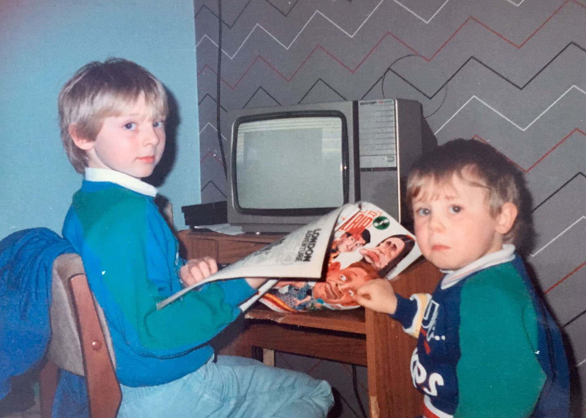
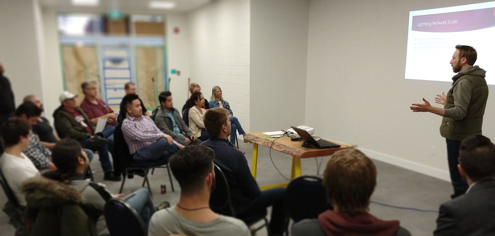

Hello, I'm Dean Roskell.
I've created games for nearly 20 years.
I make apps for the web.
My skills can be hired.
I live in Edmonton, Canada.
Let's talk.
Past Companies and Clients


Do you have an idea but are unsure how to build it?
Has your production run into problems?
Is the experience not as fun as you hoped?
I've spent decades building a career on creative problem solving and solving creative problems. By combining technical know-how with a user-centric viewpoint I develop solutions that can fit the requirements of the project whilst serving the goal of producing a positive user-experience.
I can offer a flexible fit service, this is about your project and team.
Bio.
Stay a while and listen.
When I first saw an arcade machine I knew it was something different, something special. The alien bleeps were like a siren call drawing me in, and the phosphorous glow of the screen gave a welcoming warmth. I had no idea what I was getting into as I kept pumping coins in to kill more Invaders, but that arcade machine in the corner of the event hall felt more appealing than whatever family event I was at.
Long loading times were great for reading through game reviews and code listings. (Feb. 1986)
Once I got my first home computer with its added dimension of a keyboard and programmable interface there was no going back. I set off on a journey of discovery, writing text adventures, crude 8-bit animations, and of course 10 print "Dean is cool".
Post school-day gaming session. (Early. 1990)
As much as I enjoyed playing there was something more rewarding about making games. The way you could know every line of code but still be surprised by what the machine did, yes, mostly the surprises were just bugs, but occasionally it was an emergent event that caught you off guard; no other medium came close to creating this kind of situation.
Surfing on Cyber Waves
Making games as a hobby continued through my teens yet when it came time to enter the workforce I didn't look to it as a job, the simple reason was I just didn't make the mental leap to the idea that you actually could. I said I wanted to make games for a living, but somehow didn't take my own words seriously enough.
I didn't take some boring career path as I was still driven to work with computers. After a stint of building PCs for work, I landed a role in developing these strange new ideas called Web Sites, connected to this Internet thing.
I had some very early experience with the Web and related Internet tech mainly thanks to games and being part of this new Modding scene. Modding was about taking an existing game and changing or add parts to make it something new. This type of thing had been around since before games had gone mainstream but in the mid-'90s with games like Doom, it really took hold. So my days were spent working on Web sites and very early Web applications like shopping carts and databases, and my nights were building levels and sprites for Doom and then Quake.
Enter the Matrix
Something snapped in the late '90s, as much I was enjoying creating stuff for the Web I found myself obsessing over making games more. I finally started taking note of the jobs postings in magazines --they wouldn't post them if you couldn't do it as a career, right?-- and I decided to take the plunge.
I entered the games industry as a Game Tester at Silicon Dreams, all ready to prove my worth. In the following years, I went from position-to-position: Lead Tester, Game Designer, Lead Designer, Producer across a number of companies (See GAMES Section for more).
Getting the chance to work with a lot of great people (and some not so great, this is no perfect world) in different positions gave me this appreciation for the challenges it takes to make a full game; the many trials and tribulations, and the very real blood, sweat, and tears developers pour into a product often carried by nothing more than a passion to build something creative within tight timelines, limited budgets and conflicting situations.
Burn out is a very real thing, and you can find yourself questioning if it's all worth it, especially when you feel stuck in the cycle of building a less interesting game in hope that the next one will be The One, yet only to find that it's not and the cycle loops over.
Taking a Walk
After nearly eight straight years of building games of differing genres across many platforms, I felt the need to try and break the cycle. I wasn't seeing a spot on the horizon that was leading me to a fresh challenge I needed, so I decided to take the chance to get some fresh air and see what had been happening in that other world, the non-digital world, the real world.
I went on a globe-spanning trip to see what was out there. I found that it didn't just refresh my state, it also gave me a chance to experience many new activities, see many incredible sites, resulting in something truly inspiring. From a video game perspective, it gave me pause to think about the real-world things we create in virtual worlds, the places, and activities, and there's simply nothing more inspiring than getting the first-hand experience on that. I decided to declare the trip R&D as well as some time to refresh.
The Comeback Kid
During some travelling downtime, I found myself looking at the then recently launched App Store market Apple created after the successful launch of the iPhone. Working remotely with a dev team I got to scratch that creative itch again and we made a number of iPhone games. One of which released and happened to be the quickest game I've ever created coming in at around 24 hours; there's nothing like accepting and achieving a tight deadline.
After working on mobile I got mobile myself again and continued my trip, sorry, R&D project. This route eventually led me to find that spark I'd been getting hungry for, the chance to take on a bigger and more ambitious challenge. So I traded the backpack in for a house and got to work as a Designer at BioWare developing on their next Dragon Age game.
Working on AAA games with giant teams was a new experience, though at its core it was still the same basic process of making a game just on a much bigger scale and way harder to get to know all of your colleagues.
A Bigger Smaller Challenge
After half-a-decade of working with large teams on AAA titles, I again found myself craving a bigger challenge. Now it couldn't be bigger as in team size, or budget it had to be bigger in a different way. That way was to start a small company and take on the challenge of working on new technologies, using all the cross-disciplinary skills I had in a small team to create new games and even products that go beyond games.
This gave chance to experience first-hand the challenges of building a VR experience (Remember, I said there was nothing more inspiring than the first-hand experience, the R&D trip paid off). From VR we've gone on to explore the Web Browser (Giving my 90's Web knowledge a good refresh) as a platform and ways to fold payment systems into the core of the applications.
A Helping Hand
After more than thirty years of developing games and software (I'm not done yet), from the days as a curious kid punching at the keyboard to a much older kid punching at the keyboard, I seek ways in which I can help others reach their goals and take their ideas from thought to reality.
Presenting Lightning Network. (Oct. 2018)
As well as working with my own company building applications, I also offer my services to others, Was this the longest plug ever? (Check SERVICES Section above), I guess so. Anyway, I'm excited at what the future will bring and where I'll find my talents, and I look forward to making this Bio even longer.